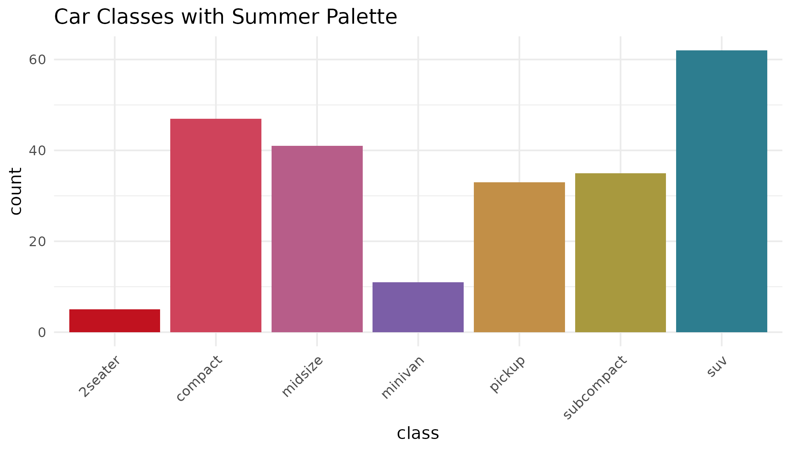
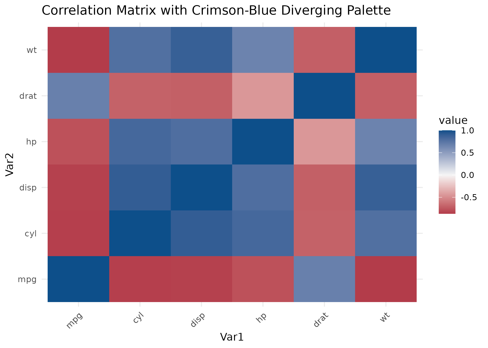
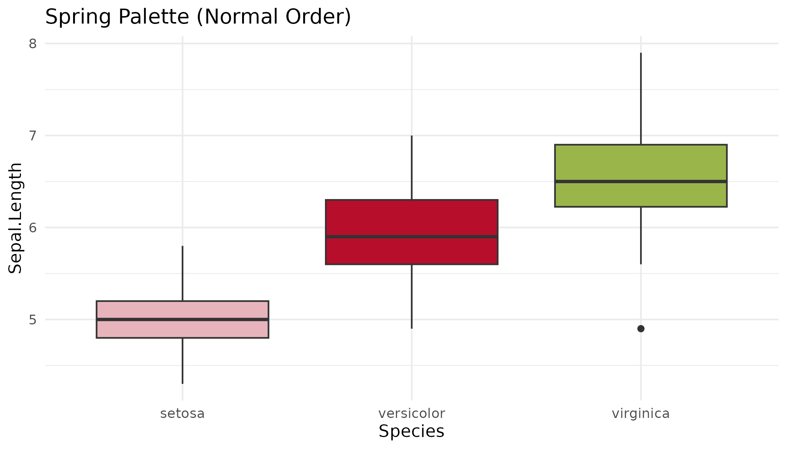
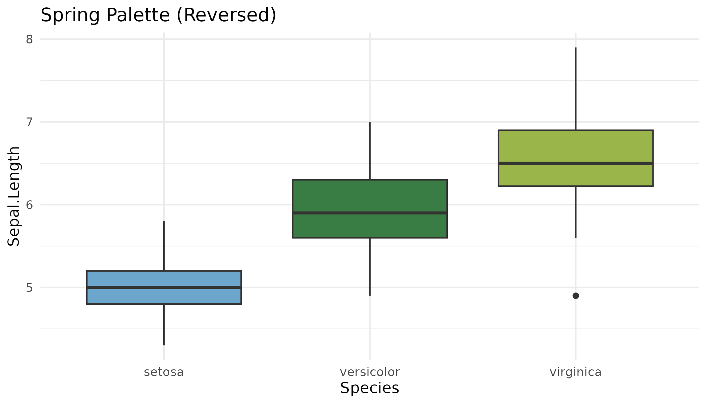
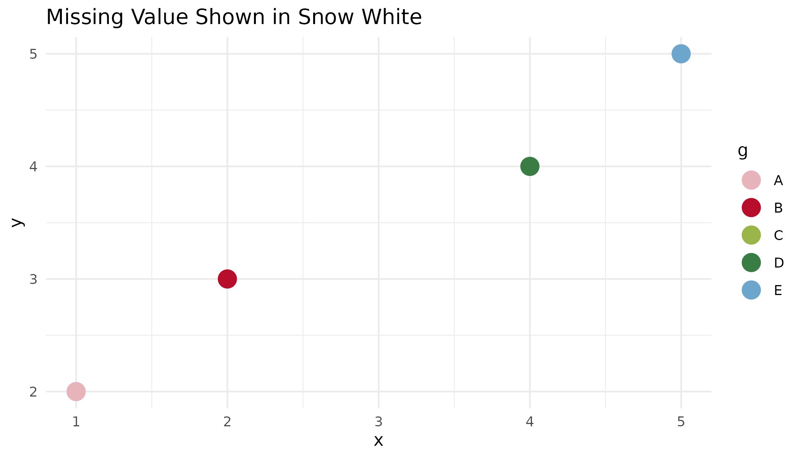

Introduction
The cambridgema package provides colorblind-friendly color palettes inspired by the flora and seasons of Cambridge, Massachusetts. All palettes are verified for accessibility under deuteranopia, protanopia, and tritanopia.
Available Palettes
The package includes three types of palettes:
-
Categorical (5 colors):
spring,summer,autumn,winter,river -
Sequential (7 colors):
crimson_seq,river_seq,foliage_seq -
Diverging (9 colors):
crimson_blue,brick_pine
list_palettes()
#> $categorical
#> [1] "spring" "summer" "autumn" "winter" "river"
#>
#> $sequential
#> [1] "crimson_seq" "river_seq" "foliage_seq"
#>
#> $diverging
#> [1] "crimson_blue" "brick_pine"Viewing Palettes
Use plot_cam_demo() to see all palettes:

Or view details of a specific palette:
print_palette("autumn")
#> Palette: autumn
#> Colors: 5
#> Type: categorical
#>
#> 1. aster_purple #6A4FB3
#> 2. goldenrod #D4A017
#> 3. maple_scarlet #C0392B
#> 4. maple_orange #E07020
#> 5. oak_brown #6B4423Basic Usage
Access Individual Colors
The cam_colors vector contains all 50+ named colors:
# Access specific colors
cam_colors["maple_red"]
#> maple_red
#> "#B70E2B"
cam_colors[c("spring_blossom", "charles_blue", "goldenrod")]
#> spring_blossom charles_blue goldenrod
#> "#E8B4BC" "#2E6FBE" "#D4A017"Get n Colors from a Palette
Use cam_cols() to get exactly n colors:
ggplot2 Integration
Discrete (Categorical) Scales
Use scale_color_cam() and scale_fill_cam()
for ggplot2:
ggplot(iris, aes(Sepal.Width, Sepal.Length, color = Species)) +
geom_point(size = 3, alpha = 0.8) +
scale_color_cam("autumn") +
labs(title = "Iris Data with Autumn Palette") +
theme_minimal()
ggplot(mpg, aes(class, fill = class)) +
geom_bar() +
scale_fill_cam("summer") +
labs(title = "Car Classes with Summer Palette") +
theme_minimal() +
theme(legend.position = "none",
axis.text.x = element_text(angle = 45, hjust = 1))
Continuous Scales
For continuous data, use discrete = FALSE:
ggplot(faithfuld, aes(waiting, eruptions, fill = density)) +
geom_tile() +
scale_fill_cam("river_seq", discrete = FALSE) +
labs(title = "Old Faithful with River Sequential Palette") +
theme_minimal()
Diverging Scales
Diverging palettes automatically center on zero - perfect for correlations:
# Create correlation matrix
cor_mat <- cor(mtcars[, 1:6])
cor_df <- as.data.frame(as.table(cor_mat))
names(cor_df) <- c("Var1", "Var2", "value")
ggplot(cor_df, aes(Var1, Var2, fill = value)) +
geom_tile() +
scale_fill_cam("crimson_blue") +
labs(title = "Correlation Matrix with Crimson-Blue Diverging Palette") +
theme_minimal() +
theme(axis.text.x = element_text(angle = 45, hjust = 1))
Reversing Palettes
All functions support the reverse parameter:
# Normal order
ggplot(iris, aes(Species, Sepal.Length, fill = Species)) +
geom_boxplot() +
scale_fill_cam("spring") +
labs(title = "Spring Palette (Normal Order)") +
theme_minimal() +
theme(legend.position = "none")
# Reversed order
ggplot(iris, aes(Species, Sepal.Length, fill = Species)) +
geom_boxplot() +
scale_fill_cam("spring", reverse = TRUE) +
labs(title = "Spring Palette (Reversed)") +
theme_minimal() +
theme(legend.position = "none")
Handling Missing Values
Missing data uses neutral granite_gray by default.
Customize with na.value:
df <- data.frame(
x = 1:5,
y = c(2, 3, NA, 4, 5),
g = c("A", "B", "C", "D", "E")
)
ggplot(df, aes(x, y, color = g)) +
geom_point(size = 5) +
scale_color_cam("spring", na.value = "#F0F5F9") +
labs(title = "Missing Value Shown in Snow White") +
theme_minimal()
#> Warning: Removed 1 row containing missing values or values outside the scale range
#> (`geom_point()`).
Next Steps
- Check the Colorblind Accessibility vignette for CVD simulation
- Explore the Cambridge Inspiration vignette for the story behind each color
- Visit the pkgdown site for full documentation